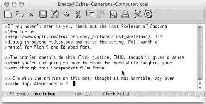
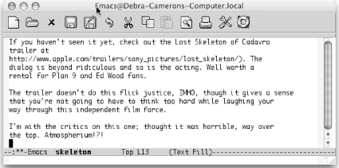

{% include JB/setup %}
{% raw %}
<div>
<div class="book" xml:lang="en"><div class="book"><div class="book"><div class="book"><h1 class="title"><a id="gnu3-CHP-6-SECT-9" class="calibre1"></a>Executing Macros on a Region</h1></div></div></div><p class="copyright">A special command
<a id="gnu3-CHP-6-ITERM-2290" class="calibre2"></a>
            <a id="gnu3-CHP-6-ITERM-2291" class="calibre2"></a>
            <a id="gnu3-CHP-6-ITERM-2292" class="calibre2"></a>lets you
execute a macro on each line in a region. How frequently do you
encounter an email with text that you want to yank, but that is
quoted several indentation levels? Of course, we can think of several
ways to delete the indentation quickly, but a line-oriented macro is
a quick approach too. You define the macro and execute it on a region
by typing <span><strong class="calibre5">C-x C-k r</strong></span> (for <span><strong class="calibre5">apply-macro-to-region-lines</strong></span>). Remember that
earlier we said that macros should set themselves up to repeat? This
command is different because it expects to work on one line at a
time. You don't want to set it up to repeat by
moving to the next line; it does that automatically.</p><p class="copyright">
            <a class="calibre2" href="ch06s09.html#gnu3-CHP-6-TABLE-5" title="Table 6-5. Macro for deleting indentation marks">Table 6-5</a> shows a quick line-oriented macro that
deletes indentation marks from text quoted in an email or
<a id="gnu3-CHP-6-ITERM-2293" class="calibre2"></a>newsgroup message.</p><div class="book"><a id="gnu3-CHP-6-TABLE-5" class="calibre2"></a><p class="title2"><b class="calibre25">Table 6-5. Macro for deleting indentation marks</b></p><div class="table-contents"><table summary="Macro for deleting indentation marks" class="calibre8"><colgroup class="calibre9"><col class="calibre10"/><col class="calibre10"/></colgroup><thead class="calibre11"><tr class="calibre12"><th class="calibre26">
                        <p class="copyright">Keystrokes</p>
                     </th><th class="calibre27">
                        <p class="copyright">Action</p>
                     </th></tr></thead><tbody class="calibre15"><tr class="calibre12"><td class="calibre28">
                        <p class="copyright">
                           <span><strong class="calibre5">F3</strong></span>
                        </p>
                     </td><td class="calibre29">
                        <p class="copyright">Start the macro definition.</p>
                     </td></tr><tr class="calibre12"><td class="calibre28">
                        <p class="copyright">
                           <span><strong class="calibre5">C-a</strong></span>
                        </p>
                     </td><td class="calibre29">
                        <p class="copyright">Move to the beginning of the line.</p>
                     </td></tr><tr class="calibre12"><td class="calibre28">
                        <p class="copyright">
                           <span><strong class="calibre5">M-f</strong></span>
                        </p>
                     </td><td class="calibre29">
                        <p class="copyright">Move forward one word.</p>
                     </td></tr><tr class="calibre12"><td class="calibre28">
                        <p class="copyright">
                           <span><strong class="calibre5">M-b</strong></span>
                        </p>
                     </td><td class="calibre29">
                        <p class="copyright">Move to the beginning of this word.</p>
                     </td></tr><tr class="calibre12"><td class="calibre28">
                        <p class="copyright">
                           <span><strong class="calibre5">C-Space</strong></span>
                        </p>
                     </td><td class="calibre29">
                        <p class="copyright">Set the mark.</p>
                     </td></tr><tr class="calibre12"><td class="calibre28">
                        <p class="copyright">
                           <span><strong class="calibre5">C-a</strong></span>
                        </p>
                     </td><td class="calibre29">
                        <p class="copyright">Move to the beginning of the line.</p>
                     </td></tr><tr class="calibre12"><td class="calibre28">
                        <p class="copyright">
                           <span><strong class="calibre5">C-w</strong></span>
                        </p>
                     </td><td class="calibre29">
                        <p class="copyright">Delete the extraneous indentation characters.</p>
                     </td></tr><tr class="calibre12"><td class="calibre30">
                        <p class="copyright">
                           <span><strong class="calibre5">F4</strong></span>
                        </p>
                     </td><td class="calibre31">
                        <p class="copyright">End the macro definition.</p>
                     </td></tr></tbody></table></div></div><br class="book"/><div class="book"><a id="ch06-16-fm2xml" class="calibre2"></a><table class="calibre8"><colgroup class="calibre9"><col class="calibre10"/></colgroup><tbody class="calibre15"><tr class="calibre12"><td class="calibre17">
                        <p class="copyright">Initial state:</p>
                     </td></tr><tr class="calibre12"><td class="calibre17">
                        <p class="copyright">
                           </p><div class="book"><div class="mediaobject"><a id="I_6_tt188" class="calibre2"></a></div></div><p class="copyright">
                        </p>
                     </td></tr><tr class="calibre12"><td class="calibre19">
                        <p class="copyright">Text indented at various levels (Mac OS X).</p>
                     </td></tr></tbody></table></div><div class="book"><a id="ch06-17-fm2xml" class="calibre2"></a><table class="calibre8"><colgroup class="calibre9"><col class="calibre10"/></colgroup><tbody class="calibre15"><tr class="calibre12"><td class="calibre17">
                        <p class="copyright">Mark the text as a region, move to the beginning of the region, then
type: <span><strong class="calibre5">C-x C-k r</strong></span>
                        </p>
                     </td></tr><tr class="calibre12"><td class="calibre17">
                        <p class="copyright">
                           </p><div class="book"><div class="mediaobject"><a id="I_6_tt189" class="calibre2"></a></div></div><p class="copyright">
                        </p>
                     </td></tr><tr class="calibre12"><td class="calibre19">
                        <p class="copyright">Indentation is deleted (Mac OS X).</p>
                     </td></tr></tbody></table></div></div></div>

{% endraw %}

